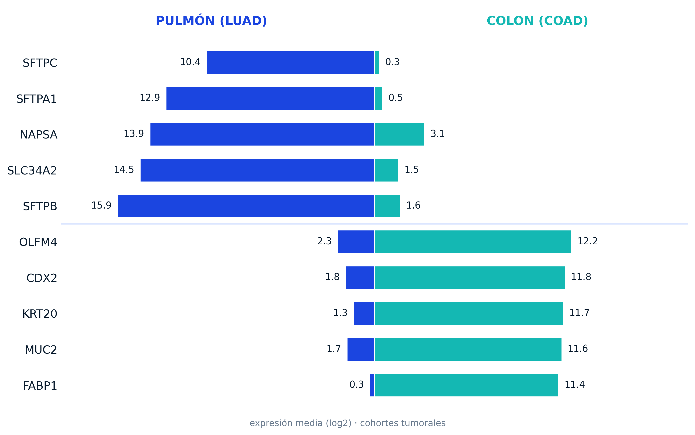

OncoLens
Lab Work
When two tumours look alike under the microscope, can their genes still say where they came from?
Digital lab by Yasira
RESEARCH
EXPERIMENTATION

When two tumours look alike under the microscope, can their genes still say where they came from?
CornerLab is a digital space where I let myself create, research and experiment with different technologies across scientific fields: psychology, neuroscience, zoology, and anything else worth exploring.
Most of my work circles back to human behaviour, either directly or through interactive, visual and educational tools.
Building tools that are actually worth something means testing, breaking, rebuilding, and not giving up.
That's why I built this lab.
My name is Yasira. I'm a data analyst and developer with an interest in the natural sciences and human behaviour.
What drives me most is building tools that improve people's wellbeing. That's the idea behind E·Motions, which was runner-up at the AJE Málaga 2026 awards in the Entrepreneurial Initiative category.
In this section you can take a look at finished projects and at the ones still in progress. A chance to see what's cooking in the lab: how the work is done, the technologies, the background research, the reasoning behind decisions and the parts of the process that usually stay hidden.
If something catches your eye, contact me.
A two-stage cascade classifier reading tumour signal from RNA-Seq expression: healthy tissue against tumour first, then cancer type across five TCGA cohorts. Built for interpretability over raw score.
Measuring emotional states with validated instruments and giving back interpretable data on how they change over time, instead of scattered impressions. In development with AlcamaSoft.
Here you'll find blog posts, project documentation, articles and quick notes that might help someone else. It isn't uniform, and that's the point: a place to create and learn.